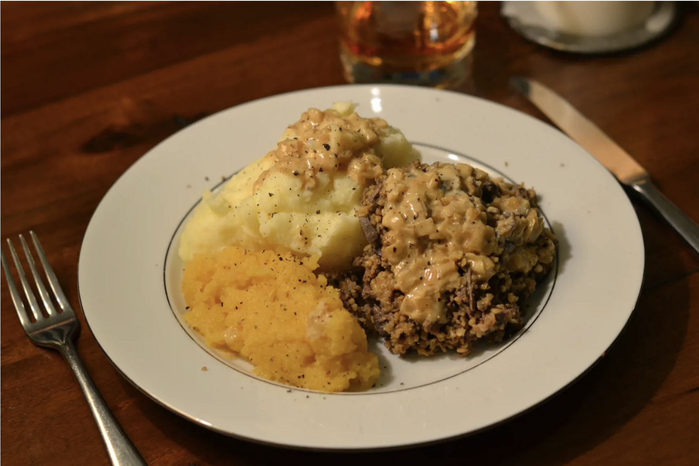

Haggis

Description
This is a traditional Scottish meal, normally eaten to celebrate Burns Night. It features vaious animal organs cooked in sheep stomach lining.
Ingredients
- 1 Ox Bung
- 3 1/16 lb of lamb's pluck (heart, lung, liver)
- 1 1/8 lb of beef or lamb trimmings or stewing steak
- 7 1/16 oz suet
- 1 1/8 lb of oatmeal
- black pepper to taste
- 1 tsp nutmeg
- 4 tsp coriander seeds, ground
- 4 tsp fine seal salt
Steps
- Rinse pluck in cold water, trim off any large piece of fat and cut away the windpipe.
- Place in a good sized pot and cover with cold water. Bring to boil and skim the surface regulary, simmer for 2 hours.
- Lift the meat from theh pot and rinse in cold water to remove scum, leave in a bowl to cool.
- Strain cooking liquid through a fine sieve and put back on the stove to reduce until you between .5 and 1 l of stock. Leave to cool
- While stock reduces, finely dice the cooked heart and lungs. Grate the liver using the coarse side of the grater, finley dice the trimmings. Mix together in a large bowl, along with the suet, oatmeal ans spices.
- Measure how much stock remains from cooking the pluck and make up to 1l with cold water. When cool, add to haggis mixture.
- To check the seasoning, pan fry a tablespoon of the mixture for 2-3 minutes and taste. Add any extra salt, pepper or spice if needed.
- Spoon the haggis mixture into the soaked, rinsed ox bung. Be aware the filling swells as it cooks, so pack quite loosely and keep a little bung at each end.
- When the haggis is the size required, expel any extra air, pinch, tie with string and cut with scissors.
- Tie the new end of the bung and continue stuffing. Freeze any spare haggises.
- Before cooking, pierce the haggis several times with a needle. Place in a pan of cold water and bring to a boil. Simmer for 1.5-2 hours. When ready the internal temperature should read at least 74C or 165F
- Serve with mashed potatoes and swede. Or neeps and tatties
Recipe provided by Great Brittish Chefs